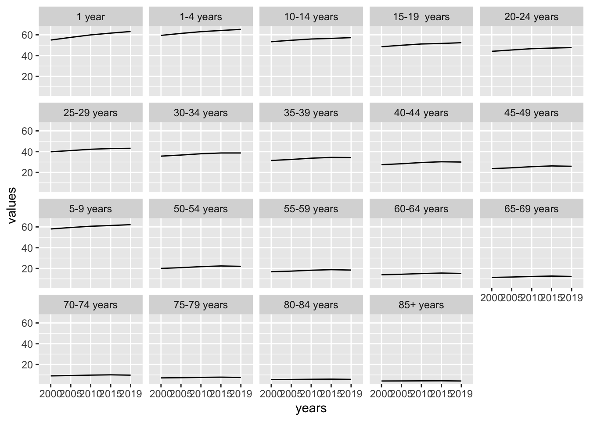

This section is dedicated to a closer look at what are the components of the health metrics, how to build them and finally how to use them for making countries comparison. YLLs,YLDs and DALYs can be used for different cause of deaths and disabilities, at different age levels.
3.1 Components
Two fundamental components are used for calculating the DALYs:
life tables
life expectancy
Both of these elements are key for achieving the highest value of prediction of the state of health of a population.
3.1.1 Life tables
The life tables are selected among the most frequently used, more information about how to build a like table can be found in the ?sec-appendix_a of this book.
library(tidyverse)xmart <-read_csv("data/xmart.csv",skip =1)xmart %>% head
# A tibble: 1,995 × 4
x1 x2 years values
<chr> <chr> <chr> <dbl>
1 nMx - age-specific death rate between ages x and x+n <1 year x2019… 0.0478
2 nMx - age-specific death rate between ages x and x+n <1 year x2019… 0.0513
3 nMx - age-specific death rate between ages x and x+n <1 year x2019… 0.0441
4 nMx - age-specific death rate between ages x and x+n <1 year x2015… 0.0566
5 nMx - age-specific death rate between ages x and x+n <1 year x2015… 0.0602
6 nMx - age-specific death rate between ages x and x+n <1 year x2015… 0.0527
7 nMx - age-specific death rate between ages x and x+n <1 year x2010… 0.0675
8 nMx - age-specific death rate between ages x and x+n <1 year x2010… 0.0723
9 nMx - age-specific death rate between ages x and x+n <1 year x2010… 0.0625
10 nMx - age-specific death rate between ages x and x+n <1 year x2005… 0.0822
# … with 1,985 more rows
# A tibble: 7 × 2
indicator n
<chr> <int>
1 ex - expectation of life at age x 285
2 lx - number of people left alive at age x 495
3 ndx - number of people dying between ages x and x+n 285
4 nLx - person-years lived between ages x and x+n 285
5 nMx - age-specific death rate between ages x and x+n 285
6 nqx - probability of dying between ages x and x+n 495
7 Tx - person-years lived above age x 285
xmart_tidy %>%filter(sex=="both", indicator=="ex - expectation of life at age x")%>%#age_group=="1 year")%>%ggplot(aes(years,values,group=indicator))+geom_line()+facet_wrap(vars(age_group))

3.1.2 Life expectancy
The life expectancy rates are calculated with consideration of the probability of survival based on key parameter such as age, and deaths probabilities for that age. More info about how to calculate the life expectancy can be found #sec-tools of this book.
3.2 How to build the metrics
In this section a practical calculation of the health metrics is done for the practitioner to be able to replicate this calculation for further analysis based on these key elements.
3.2.1 YLLs
The number of years of life lost YLLs is the first of the three metrics that is calculated, and is important for releasing a first look at the status of a population. It is calculated for identifying the area where improvement is required for reducing the loss in health status and clearly reducing the probability of death.
Life expectancy for this book calculations is from worlddata